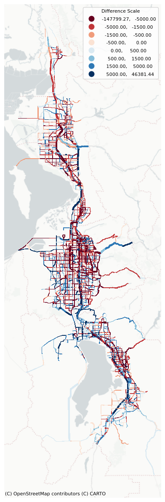

Code
import os
import pandas as pd
import geopandas as gpd
import numpy as np
import matplotlib.pyplot as plt
import contextily as ctxFileNotFoundError: [Errno 2] No such file or directory: 'data/5-assignhwy/WFv910_OY_2023_Summary_SEGID.csv'df_mod1 = df_mod[['SEGID','CO_FIPS','DISTANCE','DY_Vol','DY_Vol_PC','DY_Vol_MD','DY_Vol_HV']].rename(columns={'DY_Vol':'Mod_AWDT','DY_Vol_PC':'Mod_Car','DY_Vol_MD':'Mod_MD','DY_Vol_HV':'Mod_HV'})
df_obs1 = df_obs[['SEGID', 'Obs_AWDT', 'Obs_Car', 'Obs_MD', 'Obs_HV']]
allveh = pd.merge(df_mod1,df_obs1,on='SEGID',how='left')
allveh = pd.merge(allveh,df_ft, on='SEGID', how='left')
allveh| SEGID | CO_FIPS | DISTANCE | Mod_AWDT | Mod_Car | Mod_MD | Mod_HV | Obs_AWDT | Obs_Car | Obs_MD | Obs_HV | FTCLASS | |
|---|---|---|---|---|---|---|---|---|---|---|---|---|
| 0 | 0006_141.0 | 49.0 | 5.843 | 1644.1 | 1372.1 | 152.0 | 120.0 | 1492.728 | 1346.857127 | 51.900660 | 93.970213 | Principal Arterial |
| 1 | 0006_146.9 | 49.0 | 3.039 | 1648.5 | 1374.5 | 153.0 | 120.0 | 1492.728 | 1346.857127 | 51.900660 | 93.970213 | Principal Arterial |
| 2 | 0006_149.9 | 49.0 | 0.678 | 1597.7 | 1153.6 | 179.4 | 86.2 | 2401.944 | 1949.021430 | 226.822778 | 226.099793 | Principal Arterial |
| 3 | 0006_150.6 | 49.0 | 1.973 | 1751.5 | 1247.6 | 197.3 | 91.6 | 2401.944 | 1949.021430 | 226.822778 | 226.099793 | Principal Arterial |
| 4 | 0006_152.6 | 49.0 | 0.316 | 2363.4 | 1542.2 | 289.5 | 136.2 | 2378.328 | 1713.801752 | 366.493210 | 298.033038 | Minor Arterial |
| ... | ... | ... | ... | ... | ... | ... | ... | ... | ... | ... | ... | ... |
| 4402 | WFRC_8486 | 35.0 | 0.501 | 1820.2 | 1338.9 | 177.0 | 47.8 | NaN | NaN | NaN | NaN | Collector |
| 4403 | WFRC_8487 | 35.0 | 0.501 | 1127.8 | 900.1 | 81.7 | 24.7 | NaN | NaN | NaN | NaN | Collector |
| 4404 | WFRC_8488 | 35.0 | 0.529 | 2789.1 | 2140.7 | 230.6 | 98.8 | NaN | NaN | NaN | NaN | Collector |
| 4405 | WFRC_8491 | 35.0 | 0.265 | 462.7 | 322.6 | 47.1 | 4.2 | NaN | NaN | NaN | NaN | Collector |
| 4406 | WFRC_8492 | 35.0 | 0.445 | 6086.9 | 3672.8 | 810.5 | 317.5 | NaN | NaN | NaN | NaN | Collector |
4407 rows × 12 columns
df_obs = df_obs[['SEGID','data','Obs_AWDT','Obs_Car','Obs_MD','Obs_HV']].rename(columns={'Obs_AWDT':'Total','Obs_Car':'Car','Obs_MD':'MD','Obs_HV':'HV'})
df_mod['Car'] = df_mod['DY_Vol_PC'] + df_mod['DY_Vol_LT']
df_mod = df_mod.rename(columns={'DY_Vol':'Total','DY_Vol_MD':'MD','DY_Vol_HV':'HV'})
df_mod = df_mod[['SEGID','data','Total', 'Car','MD', 'HV']]def plot_volume_diff(segSum, varOption, segShp):
scenario1 = 'Modeled'
scenario2 = 'Observed'
segSum = segSum[['SEGID', 'FTCLASS', 'data', varOption]]
dfSegSum1 = segSum.query('data == @scenario1')
dfSegSum2 = segSum.query('data == @scenario2')
dfSegSum2[varOption] *= -1
dfSegSumDiff = pd.merge(dfSegSum1, dfSegSum2, on= ['SEGID'], how='left')
dfSegSumDiff['diff'] = dfSegSumDiff[varOption + '_x'] + dfSegSumDiff[varOption + '_y']
dfSegSumDiff['FTCLASS'] = dfSegSumDiff['FTCLASS_x']
sdfSegSumDiff = segShp.merge(dfSegSumDiff, on = 'SEGID')
conditions = [
(sdfSegSumDiff['diff'].lt(-10000)),
(sdfSegSumDiff['diff'].ge(-10000) & sdfSegSumDiff['diff'].lt(-3000)),
(sdfSegSumDiff['diff'].ge(-3000) & sdfSegSumDiff['diff'].lt(-1000)),
(sdfSegSumDiff['diff'].ge(-1000) & sdfSegSumDiff['diff'].lt(1000)),
(sdfSegSumDiff['diff'].ge(1000) & sdfSegSumDiff['diff'].lt(3000)),
(sdfSegSumDiff['diff'].ge(3000) & sdfSegSumDiff['diff'].le(10000)),
(sdfSegSumDiff['diff'].gt(10000)),
]
choices = [2.4,2,1.7,1.7,1.7,2,2.4]
sdfSegSumDiff["lw"] = np.select(conditions, choices)
sdfSegSumDiff['lwf'] = np.where(sdfSegSumDiff['FTCLASS'] == 'Freeway', sdfSegSumDiff['lw'], sdfSegSumDiff['lw'] - 1.6)
# Create the figure and axis
fig, ax = plt.subplots()
# Print current CRS
print("Current CRS:", sdfSegSumDiff.crs)
# Check and set CRS if necessary
if sdfSegSumDiff.crs is None:
# Assuming your original data is in EPSG:4326 (WGS84)
sdfSegSumDiff.set_crs(epsg=26912, inplace=True)
# Check if we need to reproject to Web Mercator
if sdfSegSumDiff.crs.to_string() != 'EPSG:3857':
sdfSegSumDiff = sdfSegSumDiff.to_crs(epsg=3857)
bin1 = [-15000, -7500, -2500, 0, 2500, 7500, 15000]
bin2 = [-5000, -1500, -500, 0, 500, 1500, 5000]
if varOption=='Total':
bin = bin1
else:
bin = bin2
# Plot your geospatial data
sdfSegSumDiff.plot(
column='diff',
cmap='RdBu',
scheme="userdefined",
legend=True,
classification_kwds=dict(bins=bin),
linewidth=sdfSegSumDiff['lwf'],
ax=ax,
antialiased=False
)
# Add basemap using contextily with OpenStreetMap
ctx.add_basemap(ax, source=ctx.providers.CartoDB.PositronNoLabels, alpha=1)
# Adjust the margins and axis
ax.margins(0.1)
ax.axis('off')
# Adjust the x-axis limits to cut off the right side of the map
xlim = ax.get_xlim() # Get current x-axis limits
cutoff_value = xlim[1] - 65000 # Define how much you want to cut off (adjust value as needed)
ax.set_xlim(xlim[0], cutoff_value) # Set new x-axis limits
# Adjust legend size
leg = ax.get_legend() # Get the current legend
leg.set_bbox_to_anchor((1, 1)) # Move the legend outside the plot area if necessary
leg.set_title('Difference Scale', prop={'size': 8}) # Adjust the title size
for text in leg.get_texts():
text.set_fontsize(8) # Adjust the size of the legend text
# Show the plot
plt.rcParams["figure.figsize"]=6,12
plt.savefig(f'_pictures/vol-diff-{varOption}.png', bbox_inches='tight', dp=12000)
plt.tight_layout()C:\Users\cday\AppData\Local\Temp\ipykernel_24536\4189449411.py:9: SettingWithCopyWarning:
A value is trying to be set on a copy of a slice from a DataFrame.
Try using .loc[row_indexer,col_indexer] = value instead
See the caveats in the documentation: https://pandas.pydata.org/pandas-docs/stable/user_guide/indexing.html#returning-a-view-versus-a-copy
dfSegSum2[varOption] *= -1
C:\Users\cday\AppData\Local\Temp\ipykernel_24536\4189449411.py:87: MatplotlibDeprecationWarning: savefig() got unexpected keyword argument "dp" which is no longer supported as of 3.3 and will become an error two minor releases later
plt.savefig(f'_pictures/vol-diff-{varOption}.png', bbox_inches='tight', dp=12000)Current CRS: EPSG:26912